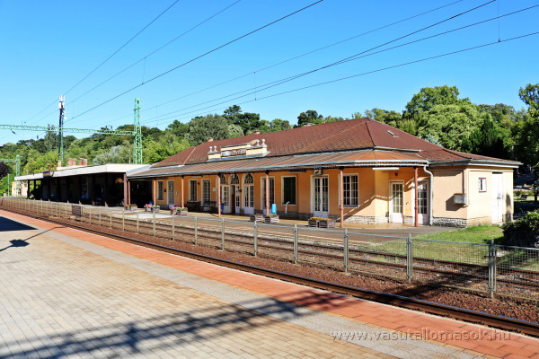
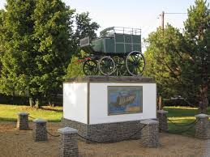
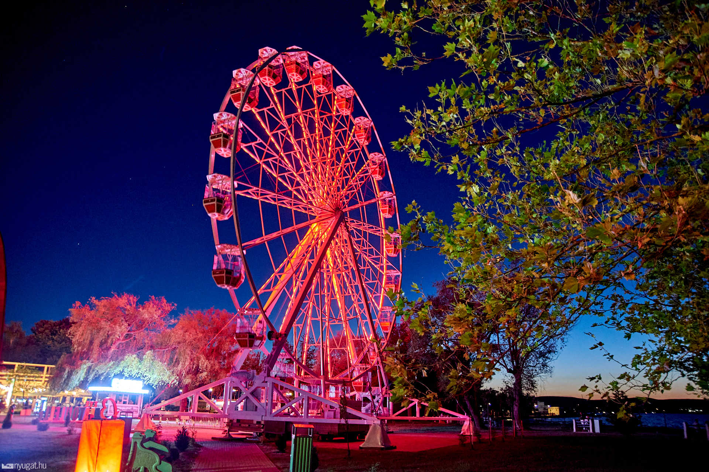
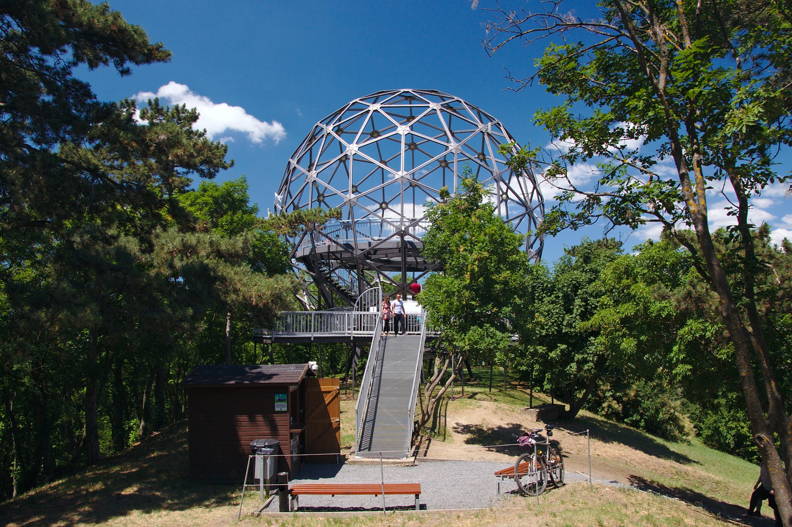

Warum lohnt sich ein Besuch in Balatonszemes?
Balatonszemes ist ein ruhiger Ort am Südufer des Balaton, ideal für Spaziergänge, Strandtage und kurze Ausflüge in die Nachbarorte.

Entdecke Balatonszemes mit einem Klick!


Balatonszemes ist ein ruhiger Ort am Südufer des Balaton, ideal für Spaziergänge, Strandtage und kurze Ausflüge in die Nachbarorte.


Das Museum zeigt die Geschichte des Postverkehrs und besondere Fahrzeuge, die über die Jahrzehnte im Postdienst eingesetzt wurden.
Route anzeigen
Das Riesenrad in Balatonlelle bietet einen schönen Blick auf den Balaton, den Hafen und die Hügel am gegenüberliegenden Ufer.
Route anzeigen
Der bekannte Aussichtsturm in Balatonboglár ist ein markantes Ausflugsziel mit weiter Aussicht auf den Balaton.
Route anzeigen